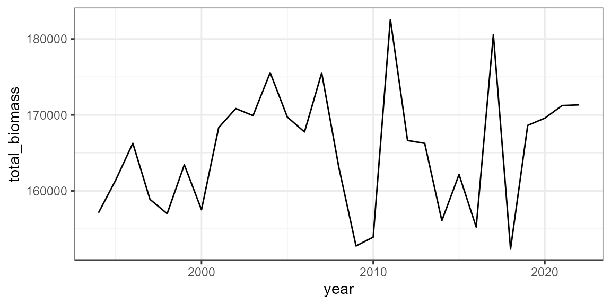

birdsize is written to interface naturally with data
from the North American Breeding Bird Survey (Pardieck et al. 2019).
Beginning with data from a BBS route, birdsize can directly
simulate body size and basal metabolic rate measurements and calculate
year- or species-wide summary statistics.
Data releases for the Breeding Bird Survey are available on ScienceBase, e.g. here.
The Data Retriever also provides an interface for downloading recent releases. Instructions for installing the Data Retriever for R are available here.
birdsize includes a demo dataset with the same column
names as the Breeding Bird Survey data available through ScienceBase or
the Retriever, but with synthetic data:
demo_raw_data <- birdsize::demo_route_raw
head(demo_raw_data)
#> record_id routedataid countrynum statenum route rpid year aou count10
#> 1 900000 9009911011994 900 99 1 101 1994 4730 8
#> 2 900001 9009911011995 900 99 1 101 1995 4730 13
#> 3 900002 9009911011996 900 99 1 101 1996 4730 8
#> 4 900003 9009911011997 900 99 1 101 1997 4730 9
#> 5 900004 9009911011998 900 99 1 101 1998 4730 10
#> 6 900005 9009911011999 900 99 1 101 1999 4730 12
#> count20 count30 count40 count50 stoptotal speciestotal
#> 1 12 15 12 15 5 62
#> 2 9 11 10 10 5 53
#> 3 11 9 13 15 5 56
#> 4 13 16 9 12 5 59
#> 5 6 12 8 7 5 43
#> 6 13 5 9 5 5 44Following Harris et al. (2018), it is recommended to filter the raw
BBS data to remove taxa that are poorly sampled via the BBS methods
(e.g. nightbirds, waterbirds) and to remove unidenitifed taxa. The
filter_bbs_survey function performs this cleaning:
demo_clean_data <- birdsize::filter_bbs_survey(demo_raw_data)
head(demo_clean_data)
#> record_id routedataid countrynum statenum route rpid year aou count10
#> 1 900000 9009911011994 900 99 1 101 1994 4730 8
#> 2 900001 9009911011995 900 99 1 101 1995 4730 13
#> 3 900002 9009911011996 900 99 1 101 1996 4730 8
#> 4 900003 9009911011997 900 99 1 101 1997 4730 9
#> 5 900004 9009911011998 900 99 1 101 1998 4730 10
#> 6 900005 9009911011999 900 99 1 101 1999 4730 12
#> count20 count30 count40 count50 stoptotal speciestotal
#> 1 12 15 12 15 5 62
#> 2 9 11 10 10 5 53
#> 3 11 9 13 15 5 56
#> 4 13 16 9 12 5 59
#> 5 6 12 8 7 5 43
#> 6 13 5 9 5 5 44The community_generate function will generate
individual-level size and BMR estimates for all individuals recorded in
a community data frame of the type available from ScienceBase, the
Retriever, or the included demo data:
set.seed(2022)
demo_community <- birdsize::community_generate(demo_clean_data)
head(demo_community)
#> record_id routedataid countrynum statenum route rpid year count10 count20
#> 1 900000 9009911011994 900 99 1 101 1994 8 12
#> 2 900000 9009911011994 900 99 1 101 1994 8 12
#> 3 900000 9009911011994 900 99 1 101 1994 8 12
#> 4 900000 9009911011994 900 99 1 101 1994 8 12
#> 5 900000 9009911011994 900 99 1 101 1994 8 12
#> 6 900000 9009911011994 900 99 1 101 1994 8 12
#> count30 count40 count50 stoptotal speciestotal aou sim_species_id genus
#> 1 15 12 15 5 62 4730 4730 Alauda
#> 2 15 12 15 5 62 4730 4730 Alauda
#> 3 15 12 15 5 62 4730 4730 Alauda
#> 4 15 12 15 5 62 4730 4730 Alauda
#> 5 15 12 15 5 62 4730 4730 Alauda
#> 6 15 12 15 5 62 4730 4730 Alauda
#> species individual_mass individual_bmr mean_size sd_size abundance
#> 1 arvensis 40.44602 146.8560 37.475 3.300613 62
#> 2 arvensis 33.60224 128.6737 37.475 3.300613 62
#> 3 arvensis 34.51275 131.1501 37.475 3.300613 62
#> 4 arvensis 32.70726 126.2207 37.475 3.300613 62
#> 5 arvensis 36.38245 136.1775 37.475 3.300613 62
#> 6 arvensis 27.90115 112.6984 37.475 3.300613 62
#> sd_method
#> 1 AOU lookup
#> 2 AOU lookup
#> 3 AOU lookup
#> 4 AOU lookup
#> 5 AOU lookup
#> 6 AOU lookupThe first 15 columns (record_id through
aou) are retained from the input data. For species in the
BBS, sim_species_id is identical to the AOU used for
species identification. genus and species give
the scientific name associated with the AOU.
individual_mass and individual_bmr are
individual-level mass and BMR estimates, with one for each
individual recorded in the input data. mean_size,
sd_size, abundance, and sd_method
give the parameters used to generate the individual-level estimates.
The community_summarize function will calculate summary
statistics - for example, the total, mean, and standard deviation
abundance, biomass, and energy use of all individuals on a route over
time:
demo_summary <- birdsize::community_summarize(demo_community, level = "year")
head(demo_summary)
#> # A tibble: 6 × 15
#> routedataid count…¹ state…² route rpid year speci…³ total…⁴ total…⁵ total…⁶
#> <chr> <dbl> <dbl> <dbl> <dbl> <int> <chr> <int> <dbl> <dbl>
#> 1 90099110119… 900 99 1 101 1994 aou 1361 157120. 352457.
#> 2 90099110119… 900 99 1 101 1995 aou 1443 161413. 364631.
#> 3 90099110119… 900 99 1 101 1996 aou 1413 166267. 368934.
#> 4 90099110119… 900 99 1 101 1997 aou 1381 158888. 357190.
#> 5 90099110119… 900 99 1 101 1998 aou 1415 157009. 357502.
#> 6 90099110119… 900 99 1 101 1999 aou 1412 163440. 367197.
#> # … with 5 more variables: total_richness <int>, mean_individual_mass <dbl>,
#> # sd_individual_mass <dbl>, mean_metabolic_rate <dbl>,
#> # sd_metabolic_rate <dbl>, and abbreviated variable names ¹countrynum,
#> # ²statenum, ³species_designator, ⁴total_abundance, ⁵total_biomass,
#> # ⁶total_metabolic_rateThis can be useful to explore variation over the duration of time for which a route has been sampled:

Harris DJ, Taylor SD, White EP. 2018. Forecasting biodiversity in breeding birds using best practices. PeerJ 6:e4278 https://doi.org/10.7717/peerj.4278
Pardieck, K.L., Ziolkowski Jr., D.J., Lutmerding, M., Aponte, V., and Hudson, M-A.R., 2019, North American Breeding Bird Survey Dataset 1966 - 2018 (ver. 2018.0): U.S. Geological Survey, Patuxent Wildlife Research Center, https://doi.org/10.5066/P9HE8XYJ.